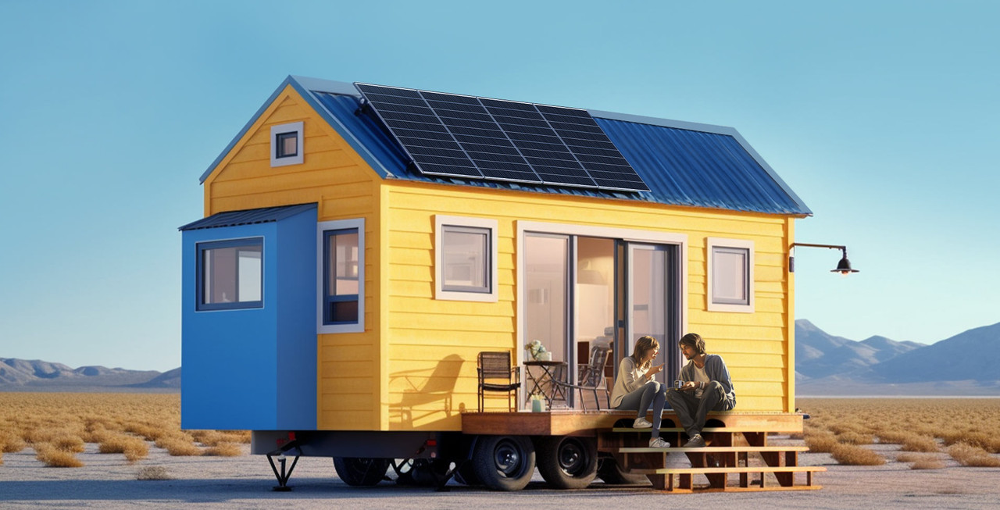
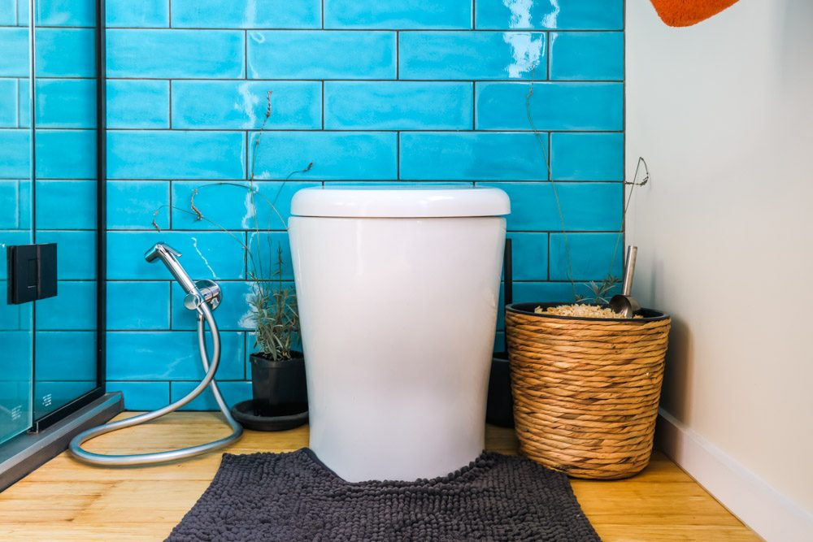
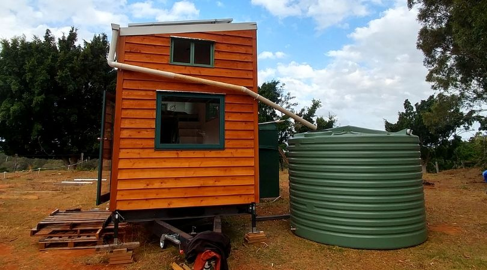

One of the standout features of tiny homes is their efficient use of materials. Builders often select sustainable, renewable, or reclaimed materials, cutting down on the resources needed for construction. This means less deforestation, reduced manufacturing emissions, and fewer resources spent in production.
04
Eco-friendly Design
Tiny homes are designed with eco-friendly principles at their core, creating a unique opportunity to live sustainably while enjoying the comforts of a personal space. These homes focus on minimizing environmental impact by reducing energy consumption, lowering waste, and optimizing resources—an approach that not only benefits the planet but can also lead to a more fulfilling, intentional lifestyle.
With a focus on using every inch wisely, tiny homes embody the idea that a comfortable living environment doesn’t require excessive space or materials—just smart design and intention.

Tiny homes also prioritize energy efficiency, often featuring solar panels, efficient insulation, and strategic window placements that maximize natural light and reduce the need for artificial lighting. Some homes incorporate energy-efficient appliances and compact heating and cooling systems that require far less power to maintain a cozy indoor climate. By choosing a tiny home, you’re embracing a lifestyle that naturally cuts down on energy use and the resulting emissions, reducing your overall carbon footprint.


Water conservation is another cornerstone of tiny home design. Many tiny homes are outfitted with composting toilets, low-flow fixtures, and rainwater collection systems, which dramatically reduce water waste. Living tiny can shift our mindset toward more sustainable water use, helping to alleviate stress on local water supplies and create a ripple effect of responsible water management.
The tiny home lifestyle encourages mindful consumption and waste reduction. With limited space, owners are motivated to acquire only what they need, keeping clutter at bay and reducing the cycle of purchasing and discarding items. This approach doesn’t just free up space; it contributes to a broader cultural shift towards minimalism and conscious consumption, which is vital for reducing landfill waste and conserving natural resources.
This is a community that values simplicity, efficiency, and eco-responsibility. Each decision you make within the walls of a tiny home reinforces a commitment to sustainable living and encourages others to consider similar changes. This movement isn’t just about downsizing—it's about embracing a sustainable lifestyle that prioritizes the health of our planet for future generations.